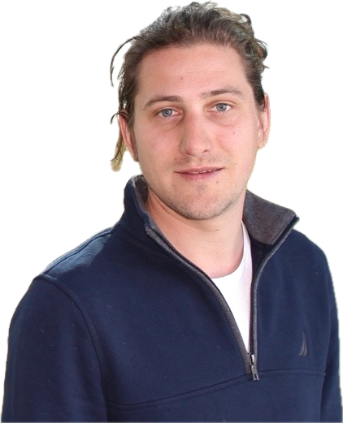

Fluid–structure interactions
How deformation redirects transport pathways.
MechaBioFluidics team · Toulouse, France

Research in mechanics and biofluidics
I investigate how pressure, deformation and tissue architecture shape fluid transport in living systems, from porous biological matrices to engineered microvessels and cancer models.
Scroll to explore ↓Biological tissues are permeated by water, solutes, cells and signalling molecules. Their movement depends on the coupling between pressure, deformation, geometry and active biological processes.
My research combines mechanics, fluid physics and quantitative biology to uncover the principles linking tissue architecture to transport function.
How deformation redirects transport pathways.
How porous living matter stores and releases fluid.
How microscopic flows become tissue-scale function.
This list is updated automatically from OpenAlex. Priority is given to recent journal articles where I am first, last or penultimate author.
Jean Cacheux, Thomas Quénan, Daniel Alcaide, Jose Ordonez-Miranda, Laurent Jalabert et al. · Physical Review Applied
Aurélien Bancaud, Tadaaki Nakajima, Jun-Ichi Suehiro, Baptiste Alric, Florent Morfoisse et al. · Lab on a Chip
Jean Cacheux, Tadaaki Nakajima, Daniel Alcaide, Takanori Sano, Kotaro Doi et al. · STAR Protocols
Daniel Alcaide, Baptiste Alric, Jean Cacheux, Shizuka Nakano, Kotaro Doi et al. · Biochemical and Biophysical Research Communications
Checking for the latest journal articles…
My primary affiliation is LAAS–CNRS within the MechaBioFluidics team. I also work closely with the ImPACT team at the Toulouse Cancer Research Center.
Primary affiliation
Mechanics, fluid physics, modelling and experimental approaches to living systems.
CNRS Research Director · LAAS–CNRS
MechaBioFluidicsPhD Student · LAAS–CNRS
MechaBioFluidicsPhD Student · LAAS–CNRS
MechaBioFluidicsResearch Engineer · LAAS–CNRS
MechaBioFluidicsMajor research partnership
Tissue mechanics and transport phenomena in pancreatic cancer biology.
Discover the ImPACT team ↗INSERM Research Director · Head of the ImPACT Team
Pancreatic cancer · Translational researchResearch Engineer · ImPACT Team
Experimental cancer researchPhD Candidate · ImPACT Team
Pancreatic cancer researchLAAS-CNRS
7 avenue du Colonel Roche
31031 Toulouse Cedex 4, France
LAAS-CNRS website ↗